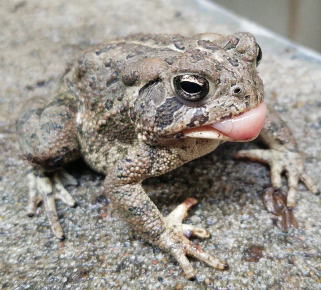
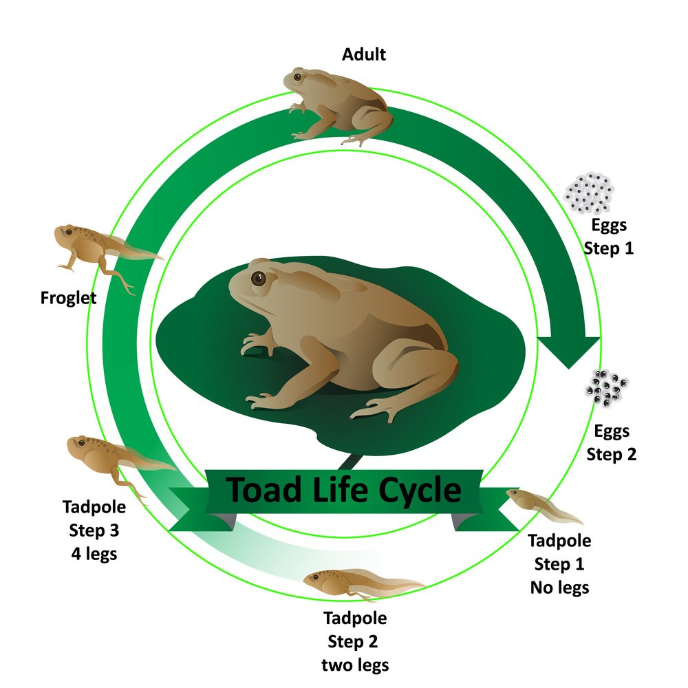

Source: My own picture!
Source: My own picture!
Overview
The American toad (Anaxyrus americanus) is a very common species of toad that is found throughout Canada and the eastern region of the United States. This species is divided into three different subspecies: the eastern American toad, the dwarf American toad, and the uncommon Hudson Bay toad. Recent taxonomic treatments have placed American toads in the genus "Anaxyrus" instead of Bufo.
Source: WikipediaAppearance
 Toad I found with a piece of grass on it.
Toad I found with a piece of grass on it.
The American toad (Anaxyrus americanus) is a very common species of toad that is found throughout Canada and the eastern region of the United States. This species is divided into three different subspecies: the eastern American toad, the dwarf American toad, and the uncommon Hudson Bay toad. Recent taxonomic treatments have placed American toads in the genus "Anaxyrus" instead of Bufo.
Source: PBS NatureWorksDistribution and Habitat
The American toad is the most broadly distributed species of the family Bufonidae in North America. They can be found in parts of every southeastern state except for Florida. American toads are spread out in places such as north to eastern Manitoba, parts of Ontario and Quebec, the Maritime Provinces, and southern Newfoundland. Their range also covers the northeastern United States and the Midwest states to eastern Kansas and the Dakotas. Dwarf American toads live as far as northeastern Texas and eastern Oklahoma.
American toads reside in terrestrial habitats ranging from hardwood or pine hardwood to white pine-eastern hemlock forests. These toads are not opposed to open fields and pastures or residential areas either, as long as the habitat has accumulated leaf litter, sandy or loamy soil for burrowing, wet hiding places, and a surplus of food. They need shallow bodies of water that are free of fish in order to mate- these may be temporary ponds, ditches on the side of the road, or the margins of lakes.
Source: Savannah River Ecology Laboratory | University of GeorgiaDiet
 Source: u/adudeguyman from r/awwwAmerican toads catch its prey (insects) with its tounge. They may also eat spiders, earthworms, slugs, and other invertebrates.
Source: PBS NatureWorksReproduction and Life Cycle
 Source: VectorStockAmerican toads in the Southeast start their breeding season in January or February. Their breeding season can last until March to July in most of their range. Male American toads will group and sing together in order to call the females to the wetlands, but they also sing on warm, moist days during the height of the season. The call of a male is a drawn-out, high-pitched, musical croak that lasts 6-30 seconds. After calling out the female toads, the male toad selects his mate. Then, the female deposits her 2,000-20,000 eggs in two, gelatinous strands in a pond.
These egg strands attach to nearby vegetation or either lie at the bottom of the pond as deep as 2-4 inches until they hatch 3-12 days later. Tadpoles grow up to be 2 months old before becoming toadlets. They reach their reproduction state at 2-3 years old.
Source: Savannah River Ecology Laboratory | University of GeorgiaBehavior
These toads are usually nocturnal. They spend daylight hours underground or under-cover. When cold weather arrives, American toads burrow themselves into the ground and hibernates.
Fortunately, these toads don't cause warts; however, they still produce a toxin in their glands behind their eyes that can harmful if swallowed by a human. The toxin can also be harmful if it gets in a human's eyes. This toxin is used to protect themselves from some predators. If these predators aren't affected by the toxin, the American toad will puff itself up to appear bigger than it actually is.
Source: PBS NatureWorks